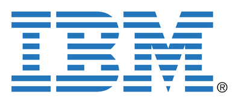

Hébergement
Equinix Metal: hébergement x86 et arm baremetal
Scaleway: hébergement x86 (VM / baremetal)
Hébergement de VM AWS: arm64

Université de Cambridge: hébergement de machines

IBM: machines PowerPC (POWER8 / 9)
Hébergement fourni de 2012 à 2020
Contributeurs
Les contributeurs à ce site :
Cette liste est obtenue depuis le log GIT, pensez à vérifier que votre nom y est bien configuré.
Anciens contributeurs aux tutoriels
Beaucoup des tutoriaux de ce site étaient à l'origine sur ocaml-tutorial.org.
Voici la liste de ceux qui y ont contribué :
- Doug Bagley
- Daniel Bünzli
- Nicolas Cannasse
- Eric C. Cooper
- Richard Donkin
- Jim Farrand
- Fabrice Le Fessant
- Jacques Garrigue
- Stephen Gilmore
- Flavio Grossi
- Damien Guichard
- Brian Hurt
- Richard Jones
- Neel Krishnaswami
- Michel Levy
- Sven Luther
- John Gerard Malecki
- Luc Maranget
- Jean-Francois Monin
- Markus Mottl
- Thomas Mraz
- Wolfgang Mueller
- Lars Nilsson
- Jose Manuel Nunes
- Frederic van der Plancke
- Paul Steckler
- Fabian Sturm
- Ryan Tarpine
- Rémi Vanicat
- Yamagata Yoriyuki
- Stefano Zacchiroli